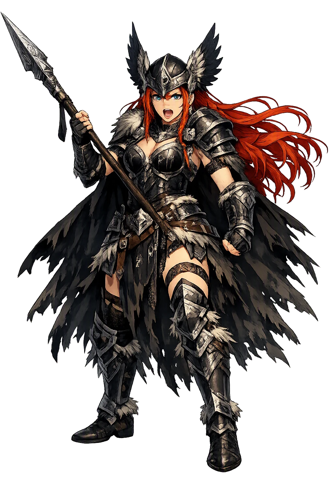
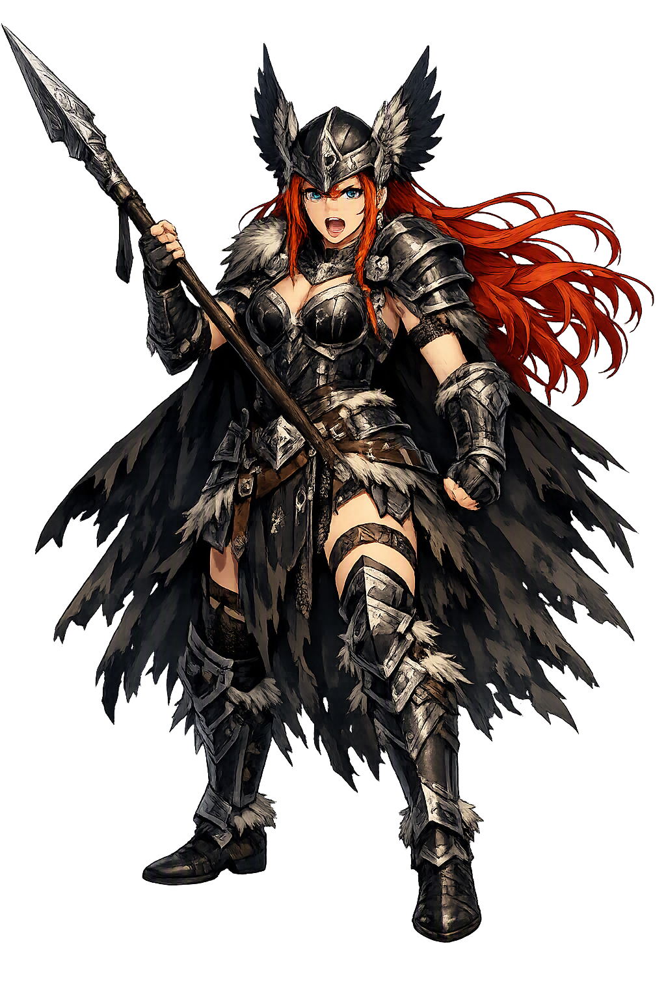

Unicode restoration and ASCII comparison
ᚴᚢᚾᚾᚱ
The name in its original Norse form. Gunnr (ᚴᚢᚾᚾᚱ) is attested in the source tradition — “War”. Its original diacritics and script distinctions carry the full phonetic and orthographic weight of the source tradition.
gunnr
The plain gunnr form is identical to the Unicode restoration. Because this name is already written in Latin letters, no diacritics, stress, or script information were lost — only capitalization differs.
Gunnr
The Unicode restoration does not need to recover lost marks for Gunnr. Its value is canonical spelling and consistent cataloguing, not the reconstruction of erased orthography. The domain is readable as-is to both DNS and humanity.
Gunnr.com → gunnr.com
The non-ASCII characters in Gunnr are encoded while the ASCII remains visible. To the DNS, it is Punycode. To humanity, it is Gunnr.
How Gunnr travels from ancient script to the modern URL
Owned, ideal, and ASCII forms of Gunnr
Gunnr
Restores ᚴᚢᚾᚾᚱ. The full Unicode restoration. gunnr.com is not in the PuniCodex collection — it is watched for release; if it drops, this temple upgrades to an owned flagship.
How Gunnr was spoken
Battle Made Divine — the Rider Who Chooses the Slain
Gunnr is the valkyrie whose name is the whole battlefield: Old Norse gunnr is simply the word for war, and the þulur and the Völuspá seeress set her riding among Óðinn's choosers of the slain. Snorri gives her the purest job-description in the corpus: Gunnr and Rota and the youngest norn, Skuld, always ride to choose the slain and decide battles.
The einherjar — the warriors she marks on the field and carries to Valhǫll, the harvest a valkyrie exists to gather.
Völuspá's image: Skuld held a shield and Skögul rode with her, and Gunnr, Hildr, Göndul and Geirskögul rode behind — the armed company of the god-folk.
The valkyrie's weapon and the battle's own emblem: Snorri says Gunnr, Rota and Skuld ride to every fight to award the victory.
The act her office names: val-kjósa, to choose the slain — the divine prerogative of saying who falls and who is taken.
Stories of Gunnr
Gunnr has no adventure of her own; her mythology is her office, told in lists that are anything but dry. Three witnesses fix her in the corpus: the Völuspá seeress sees her ride, Snorri states her function in a single sentence, and the þulur keep her name in the valkyrie roll — the tradition's way of saying that battle, in the North, had a chooser, and the chooser had a name.
Deep in the völva's vision, between the creation of the world and its burning, the seeress watches the valkyries come: 'She saw valkyries come from far and wide, ready to ride to the gods' people; Skuld held a shield, and Skögul was with her; Gunnr, Hildr, Göndul and Geirskögul — now are counted Herjan's ladies, valkyries ready to ride the earth.' Herjan is Óðinn, and the company is his. Gunnr rides fourth-named in the most famous catalogue of the Poetic Edda — not as a character in a story but as a fixture of the cosmos, as certain as the norms and the doom they enforce.
Snorri, explaining Óðinn's household, gives the valkyries their definition and Gunnr her one great sentence: Óðinn sends the valkyries to every battle; they allot death to men and award victory. 'Gunnr and Rota and the youngest norn, who is called Skuld, always ride to choose the slain and to decide the fighting.' The grouping is precise and chilling — two valkyries and a norn riding together, because in Norse thought the choice of the slain and the doom of the slain are the same act seen from two sides. Gunnr's myth is this: war is never random. Someone rides above it. Someone chooses.
The þulur — the metrical name-lists the skalds learned as their working vocabulary — preserve Gunnr among the heiti of the valkyries, and the same lists hand her name back to poetry as a common noun: gunnr, 'battle', a word a skald could wield in a kenning. The double register is the point. When a skald sang of gunnr, his audience could hear the battle or the battle-maiden in the same syllable, and the tradition never bothered to separate them. The þulur are where 'battle' and 'the valkyrie Battle' are filed under one heading.
Gunnr is the most honest figure in the valkyrie roll because she pretends to be nothing but what she is. Other choosers of the slain carry names of tumult, of rulership, of the spear; hers is the field itself. To say that Gunnr chooses the slain is to say that battle chooses its own — that once the spears cross, the outcome belongs to something no combatant commands. The Norse did not soften that thought; they dignified it. They gave the blind lottery of combat a rider, a rank among Óðinn's women, and a place in the seeress's vision, as if to say: what you cannot control, you can at least name. Every soldier who ever marched out knowing the choice was not his own has stood, without knowing it, in Gunnr's shadow.
Enter Extended Lore